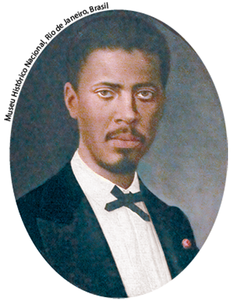
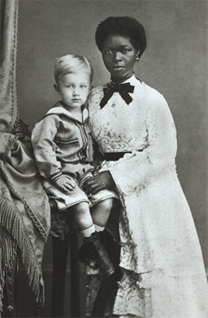
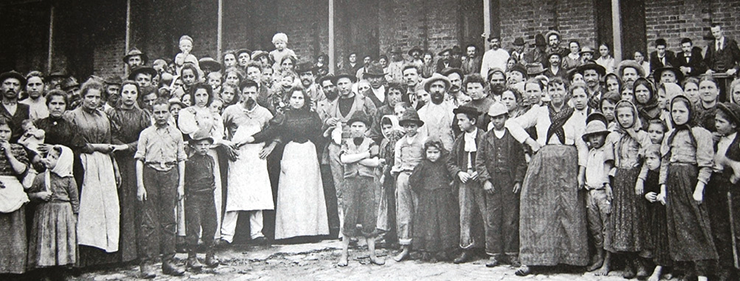
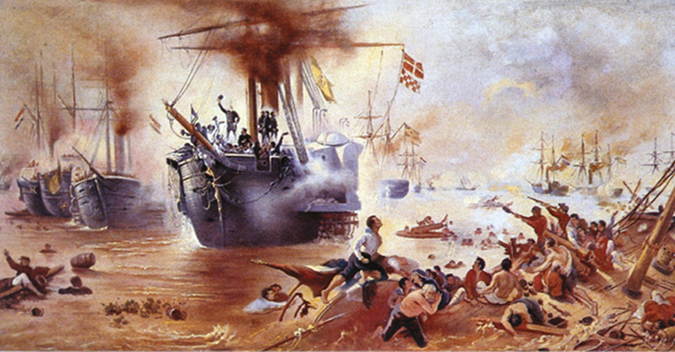
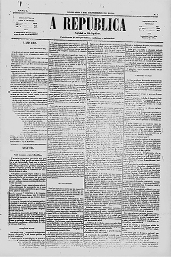
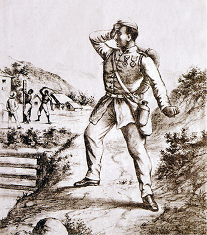
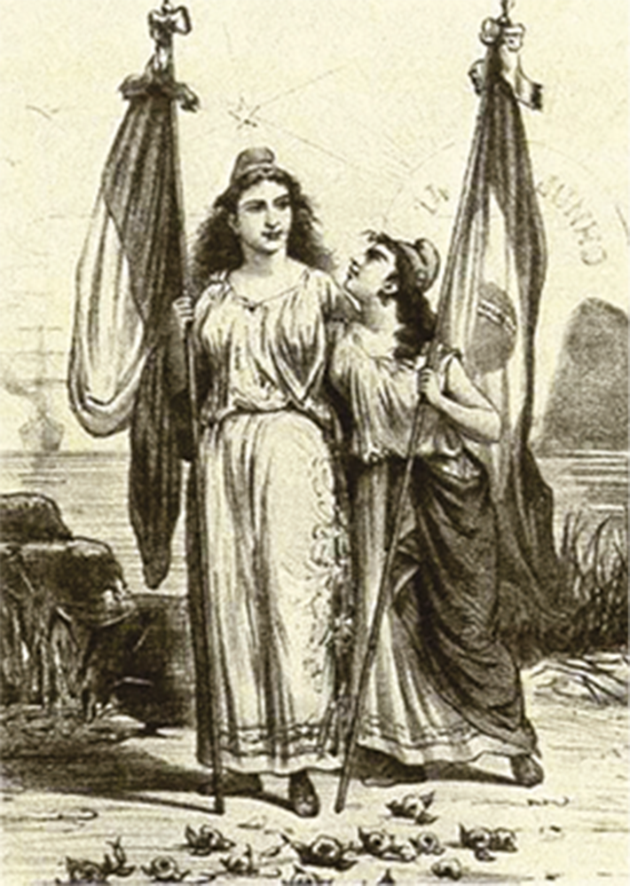
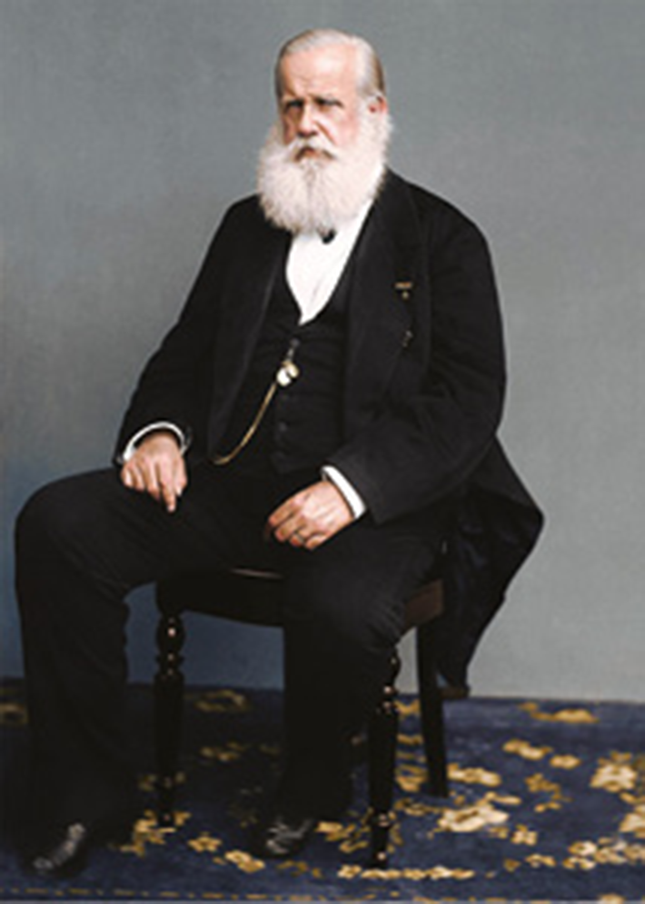

Charge da Revista Illustrada , de Ângelo Agostini, 1887, impresso, Rio de Janeiro. Nessa charge, o imperador é representado alheio às atividades políticas.
Biblioteca Nacional, Rio de Janeiro.
A legenda dessa imagem na Revista Illustrada expunha: “O rei, nosso Senhor e amo, dorme o sono da... indiferença. Os jornais que diariamente trazem os desmandos desta situação parecem produzir em S. M. o efeito de um narcótico. Bem-aventurado, Senhor! Para vós o reino do Céu, para o vosso povo... o do Inferno!”. Essa crítica demonstra que a situação política do império estava complicada no final do século XIX; e, de fato, ela já havia começado a tomar novos rumos a partir da década de 1870.
De um lado, os conflitos na região do Rio da Prata exigiram esforços concentrados da diplomacia e das forças militares brasileiras. De outro, as várias tendências do movimento abolicionista pressionavam a opinião pública e as elites sociais visando ao fim da escravidão.
Em meio a essas tensões, D. Pedro II completava quatro décadas de reinado e demonstrava sinais de apatia quanto à vida política. As longas viagens internacionais que realizou entre as décadas de 1870 e 1880 reforçaram as críticas a seu governo.
Neste capítulo, vamos analisar o modo como essa conjunção de fatores contribuiu para a derrocada da monarquia brasileira e compreender o papel desempenhado pelos valores republicanos nesse processo.
- Charges e críticas publicadas na imprensa podem contribuir para enfraquecer um governante?
- A visão do imperador como um governante apático contribuiu para ampliar as críticas ao seu governo?
Neste capítulo serão abordadas as habilidades EM13CHS101 , EM13CHS502 , EM13CHS603
Escravidão: um tema continental
As questões relativas ao fim da escravidão tornaram-se cada vez mais relevantes ao longo da segunda metade do século XIX brasileiro. Isso se relaciona tanto com o contexto internacional quanto com o fortalecimento de movimentos abolicionistas no país.
No cenário internacional, os assuntos ligados ao avanço do livre comércio ganhavam força e pressionavam os Estados que ainda mantinham relações de trabalho não assalariadas a promover mudanças. Foi assim que o Império Russo aboliu a servidão em 1864, Cuba adotou uma lei do ventre livre em 1870 e os Estados Unidos da América assistiram a uma guerra civil em função da escravidão, o que possibilitou a abolição em 1866.
Para evitar um conflito semelhante, a elite brasileira considerava fundamental garantir o processo abolicionista de cima para baixo. Mas diante dela estavam as pressões sociais dos movimentos abolicionistas, que começaram a ganhar força ao longo da década de 1860.
Movimentos abolicionistas
A partir da década de 1860, cada vez mais surgiram encontros políticos e artísticos tendo em vista o levantamento de fundos para a compra da liberdade de escravizados. Além da organização de eventos públicos, os salões políticos também se tornaram espaços de produção e circulação de textos e manifestos em defesa de uma nova ordem social.
Um líder importante da luta abolicionista foi André Rebouças. Filho de políticos baianos, nasceu em 1838 e identificava-se como mestiço; tinha acesso a bens e prestígios como poucos nascidos em sua condição social. Rebouças era um monarquista convicto, mas associava a abolição da escravidão a medidas sociais como a reforma agrária e a inclusão econômica e social dos ex-escravizados. Outra liderança importante foi Luiz Gama, filho de escravizada com um fidalgo branco. Aos 10 anos de idade, foi vendido pelo próprio pai. Ativista no campo jurídico, defendia o direito do escravizado de lutar contra a escravidão e contribuiu para a alforria de centenas de pessoas através de suas atuações jurídicas.
Rodolfo Bernardelli . Retrato de André Rebouças, séc. XIX. Óleo sobre tela. Museu Histórico Nacional, Rio de Janeiro, Brasil. Monarquista, engenheiro e abolicionista.
Museu Histórico Nacional, Rio de Janeiro, Brasil
Assim, a pressão promovida por diferentes grupos abolicionistas, bem como o contexto internacional favorável, fez com que o governo brasileiro promulgasse a Lei do Ventre Livre , em 28 de setembro de 1871. Também conhecida como Lei Rio Branco, prescrevia que a criança ficaria aos cuidados dos senhores de suas mães até os oito anos. A partir dessa idade, os senhores poderiam pedir ao Estado uma indenização pelos chamados “ingênuos” ou utilizá-los como mão de obra escravizada até os 21 anos de idade.
Biografias e testemunhos têm sido cada vez mais presentes nos vestibulares. Ambos têm em comum o fato de iluminarem a História a partir de um olhar intimista e cotidiano capaz de revelar relações de micropoderes.
A lei também criou escolas agrícolas públicas para libertos e “ingênuos”, assim como estimulou investimentos públicos que seriam utilizadosanualmente para quitar a alforria de libertos.
Entretanto, muitos criticaram seus efeitos. José do Patrocínio, por exemplo, importante ativista pró-abolição, entendia que a lei não era suficiente para garantir a liberdade dos escravizados, já que estes poderiam permanecer sob o controle dos senhores até os 21 anos. Além disso, a lei estimulou o comércio interprovincial de escravizados, garantindo a permanência das relações escravistas no país. Estima-se que essas transações comerciais tenham mobilizado de 100 mil a 200 mil cativos das regiões do Nordeste rumo às regiões do Centro-Sul entre as décadas de 1850 e 1880.
Alberto Henschel. Babá com o menino Eugene Keller , 1874, fotografia, Pernambuco. A imagem mostra que, apesar da proximidade física, o rigor dos protocolos sociais denota as desigualdades entre brancos e negros em fins do século XIX.
Alberto Henschel. Babá com o menino Eugen Keller . In : George Ermakoff. O negro na fotografia brasileira do Século XIX. Rio de Janeiro: George Ermakoff Casa Editorial, 2004
Outro abolicionista que participou ativamente dos debates sobre leis emancipacionistas foi Joaquim Nabuco. Nascido em 1849 em Recife, Nabuco chegou a se filiar à Sociedade Britânica de Abolicionismo e tentou criar uma organização semelhante no Brasil com André Rebouças, na década de 1880. Joaquim Nabuco tinha atuação política e teve um papel importante na discussão do abolicionismo no Parlamento brasileiro. Além disso, ficou conhecido pelas campanhas abolicionistas que incentivou em peças publicitárias, como rótulos de cigarros e fósforos, lenços, aguardentes e jornais.
Projetos de imigração
As iniciativas de apoio à vinda de imigrantes europeus tiveram início em 1847 com Nicolau do Campos Vergueiro, antigo regente e fazendeiro, cuja riqueza provinha do comércio de importação de escravizados.
Com recursos do governo imperial, ele subsidiou a vinda de alemães e suíços para trabalhar em fazendas do Oeste Paulista por meio de um regime de parcerias , em que os fazendeiros financiavam a vinda de imigrantes e estes deveriam pagar a viagem com seu trabalho.
Porém, esse modelo de imigração foi um fracasso devido a uma série de atritos em função da rígida disciplina de trabalho, do bloqueio das correspondências e das altas dívidas contraídas pelos imigrantes nas próprias fazendas. Situações como essa foram recorrentes e chegaram a acabar em revoltas.
Em 1871, houve uma tentativa por parte do governo de São Paulo de incentivar a imigração para o Brasil. Para isso, foram criadas linhasde crédito para os fazendeiros da região financiarem a vinda de imigrantes para suas fazendas. Essa iniciativa ficou conhecida como imigração subvencionada , porque a vinda dos imigrantes contava com auxílios concedidos pelo Estado.
Nos primeiros anos após o início desse novo sistema, o número de imigrantes que chegou ao Brasil foi relativamente baixo, pois as condições de trabalho no Brasil ainda eram muito precárias. Para resolver isso, em 1886 foi fundada a Sociedade Promotora da Imigração.
Essa organização tomou uma série de providências a fim de atrair a mão de obra imigrante para as fazendas de café, como por meio da publicação de panfletos ufanistas em diversos idiomas e da abertura de escritórios em cidades italianas de modo a acelerar a imigração.
Essa iniciativa encontrou um momento internacional oportuno, pois os efeitos da unificação nacional da Itália e da Alemanha, somados às transformações capitalistas, provocaram grande piora no nível de vida das classes mais pobres. Em linhas gerais, a imigração para São Paulo, de qualquer procedência, saltou de 6 500 pessoas em 1885 para quase 92 mil em 1888, sendo em sua maioria italianos.
Guilherme Gaensly. Imigrantes europeus posando para fotografia no pátio central da Hospedaria dos Imigrantes de São Paulo , c. 1890, fotografia, Fundação Patrimônio da Energia de São Paulo.
Fundação Patrimônio da Energia de São Paulo/Museu da Imigração do Estado de São Paulo, São Paulo, Brasil
A imigração subvencionada ajudou na substituição da mão de obra escravizada pela mão de obra assalariada nas fazendas de café, além de atender às crenças cientificistas de setores da elite que apostavam nas teorias raciais e discursos eugenistas.
Ao investir na imigração europeia, os adeptos das teorias raciais acreditavam que seria possível superar a condição mestiça e miscigenada do país. Na ótica desses indivíduos, o embranquecimento da sociedade brasileira era uma condição fundamental para o progresso material e civilizatório da nação.
A Guerra do Paraguai (1864-1870)
Outro fator fundamental para o avanço das causas abolicionistas foi a Guerra do Paraguai, ocorrida entre 1864 e 1870. Também chamada Guerra da Tríplice Aliança, é reconhecida como o maior conflito militar entre países americanos, e seus desdobramentos contribuíram não somente para a extinção da escravidão, mas também para a Crise do Império.
Esse conflito está relacionado à importância dos rios da região platina para o desenvolvimento econômico do Brasil, Argentina, Uruguai e Paraguai. Em diversos momentos do século XIX, esses países tentaram interferir na política externa uns dos outros visando a uma posição geopolítica mais favorável na região.
O estopim da guerra ocorreu quando forças paraguaias aprisionaram uma embarcação brasileira que transportava o presidente da província do Mato Grosso, coronel Frederico Carneiro de Campos. Isso provocou o rompimento das relações diplomáticas entre o Brasil e o Paraguai.
A morte do presidente paraguaio Solano López, por soldados brasileiros, marcou o final do conflito em 1870. O Paraguai saiu arrasado, perdendo partes de seu território para a Argentina e o Brasil. Além disso, de país marcado por um incipiente processo de industrialização, converteu-se em uma economia exportadora de produtos de pouca importância.
Dados indicam que metade da população do país foi dizimada, caindo de um total de 406 mil, em 1864, para cerca de 230 mil, em 1872. Os sobreviventes, em sua maioria, eram mulheres, crianças e idosos.
Em relação ao Brasil, o Exército consolidou-se ao longo da guerra. Não havia no país um serviço militar obrigatório, e a Guarda Nacional não se encontrava preparada para um evento dessa envergadura. Por isso foi necessário criar novos mecanismos para formar uma força militar capaz de participar do conflito.
Victor Meirelles. Batalha Naval do Riachuelo , 1882-1883. Óleo sobre tela, 4,20 m × 8,20 m. Museu Histórico Nacional, Rio de Janeiro, Brasil. Essa representação expressa força militar, domínio militar marítimo e ufanismo como vetores de construção de uma propaganda oficial a partir da Guerra do Paraguai.
Museu Histórico Nacional, Rio de Janeiro, Brasil
Uma das estratégias utilizadas pelo governo brasileiro foi realizar convocações forçadas da população por meio dos Voluntários da Pátria. Essa política possibilitou o fortalecimento da instituição militar, que passou a interferir diretamente na política brasileira a partir da década de 1870.
A guerra também teve efeitos econômicos importantes. Os gastos elevados criaram um grande desequilíbrio econômico e acentuaram a oposição da opinião pública contra o governo imperial. Esse é um fator importante para se entender a crise política que marcou as últimas décadas do império.
Império em crise
Em 1870, um grupo de dissidentes políticos publicou o manifesto republicano , documento que passou a aglutinar diferentes setores da elite brasileira. Entre as causas defendidas estavam uma maior representação política dos cidadãos, os direitos e as liberdades individuais e o federalismo.
Capa do jornal A República , de dezembro de 1870.
A República/Fundação Biblioteca Nacional, Rio de Janeiro, Brasil
As ideias desse grupo foram divulgadas no jornal A República , publicado em 3 de dezembro de 1870. Inspirados pelo documento, setores da elite de São Paulo fundaram em 1873 o Partido Republicano Paulista (PRP), o qual defendia o federalismo e uma instituição que garantiria maior controle político, fiscal e bancário para as províncias.
As ideias republicanas receberam o apoio de setores militares letrados na cartilha positivista europeia. O positivismo era uma filosofia conservadora desenvolvida pelo francês Auguste Comte que teve grande influência na América Latina.
Os positivistas acreditavam que as sociedades passavam por estágios históricos rumo a uma condição de civilização e progresso. No Brasil, adeptos do movimento viam-se como responsáveis pela evolução histórica da nação brasileira rumo à civilização e ao progresso, combatendo a monarquia para então se instituir uma República.
Assim, ao longo das décadas de 1870 e 1880, esses ideais conquistaram cada vez mais adeptos em meio à sociedade civil, apesar da baixíssima representação política que os republicanos tinham dentro do Parlamento brasileiro.
O período também foi marcado por tensões entre o governo brasileiro e o Exército e também a Igreja. Esses episódios foram chamados, respectivamente, de Questão Militar e Questão Religiosa , e contribuíram para enfraquecer a autoridade do imperador e impulsionar ideais republicanos e positivistas.
Paralelamente a essas desavenças entre o Império e as instituições que historicamente o apoiaram, houve tentativas de frear as forças de oposição. Em 1881, a implantação da Lei Saraiva promoveu uma reforma nos mecanismos eleitorais do Brasil visando diminuir a influência dos políticos locais na eleição e restringir o direito individual de voto. Para isso, o governo passou a exigir que o eleitor apresentasse uma série de documentos para ter o direito de votar, o que diminuiu drasticamente o número de eleitores. Outra medida estabelecida pela Lei Saraiva e que teve impacto direto no número de eleitores foi a proibição do voto de pessoas analfabetas. Como a maioria da população brasileira não sabia ler nem escrever, muitos indivíduos que tinham renda para votar acabaram perdendo esse direito.
Em 1870, 1,1 milhão de pessoas tinham direito ao voto no Brasil. Após a Lei Saraiva, esse número foi reduzido a 142 mil. Com essa lei, o governo brasileiro esperava enfraquecer a oposição e conter as novas ideias políticas.
De volta do Paraguai , de Ângelo Agostini, 1870, impresso, Rio de Janeiro, Revista Vida Fluminense , n. 12, jun. A charge trazia a legenda: “cheio de glória, coberto de louros, depois de ter derramado seu sangue em defesa da pátria e libertado um povo da escravidão, o voluntário volta ao seu país natal para ver sua mãe amarrada a um tronco horrível de realidade!”.
Ângelo Agostini. De Volta do Paraguai. In : Revista Vida Fluminense . Rio de Janeiro, Nº. 12, jun. 1870.
Outro fator que contribuiu para intensificar a crise desse período foi o avanço da pauta abolicionista. Os impactos da Guerra do Paraguai sobre a escravidão foram dramáticos, pois o número de fugas, rebeliões e resistências aumentou, enquanto o Império resistia à indenização aos proprietários dos chamados Voluntários da Pátria: os escravizados para quem havia sido prometida a libertação em caso de participação na guerra.
Em 1885, o Parlamento brasileiro aprovou a Lei dos Sexagenários , que concedeu liberdade aos cativos maiores de 60 anos e estabeleceu normas para a gradual libertação mediante indenização. Assim como a Lei do Ventre Livre de 1871, ela foi uma tentativa de frear as alas mais radicais dos abolicionistas.
Porém, esse processo gradual de abolição da escravidão dava sinais de esgotamento. Algumas províncias do Norte já tinham se adiantado à metrópole e abolido a escravidão, a exemplo do Ceará, em 1884. Além disso, a realidade concreta da sociedade brasileira parecia demonstrar que a resistência ao abolicionismo só encontrava apoio numa elite local altamente dependente desse tipo de mão de obra, os cafeicultores sediados no Vale do Paraíba.
Pesquisas atuais revelam que o número de libertos, em meados da década de 1880, era muito significativo: compunham 43% do total da população, sendo 73% deles de origem africana. Dessa maneira, a libertação dos escravizados já era uma tendência presente no cotidiano das cidades brasileiras.
Os impasses em torno da questão encontraram um fim quando o presidente do Conselho, João Alfredo, um conservador, propôs a abolição sem restrições. Essa medida ficou conhecida como Lei Áurea e foi sancionada pela princesa Isabel.
Publicada em 13 de maio de 1888, a Lei Áurea finalizou um processo legalista lento e gradual que durou mais de 40 anos, desde o reconhecimento da Bill Aberdeen, em 1845.
A abolição da escravidão foi um golpe decisivo no último pilar que sustentava o poder imperial. A elite agroexportadora viu seus interesses atingidos pela abolição sem qualquer tipo de indenização ou compensação financeira. A partir de então, a aristocracia política, principalmente a paulista, migrou seus interesses e projetos econômicos em direção ao federalismo republicano, que garantiria maior capacidade de autonomia aos Estados e suas elites. Essa conversão política após a abolição foi tão significativa, que surgiu a expressão “os republicanos de 14 de maio” para se referir àqueles que eram monarquistas até a abolição e, da noite para o dia, aderiram à causa encabeçada pelos positivistas.
A luta esquecida dos negros pelo fim da escravidão no Brasil
Nesta reportagem especial da BBC Brasil , há dados, fotos e gráficos com informações sobre a luta dos escravizados pelo fim da escravidão. Disponível em: <https://www.bbc.com/portuguese/resources/idt-sh/lutapelaabolicao>. Acesso em: 18 ago. 2021.
Entretanto, o movimento republicano ainda precisava de respaldo da hierarquia militar. Para isso, líderes positivistas passaram a buscar o apoio de militares importantes, como Marechal Deodoro da Fonseca.
Em 15 de novembro de 1889, Deodoro da Fonseca foi convencido a marchar com uma pequena guarnição para o Ministério da Guerra, onde estavam as tropas monarquistas para dissolver o Parlamento e derrubar o governo. O imperador, preocupado em evitar uma guerra civil, decidiu não resistir ao movimento e partiu para o exílio. Isso marcou o fim da monarquia brasileira e resultou na Proclamação da República .
Leitura de documentos
Manifesto republicano de 1870
[...] Desde que exista, em qualquer constituição, um elemento de coação ao princípio da liberdade democrática, a soberania nacional está violada, é uma coisa írrita e nula, incapaz dos salutares efeitos da moderna fórmula do governo – o governo de todos por todos. Outra condição indispensável da soberania nacional é ser inalienável e não poder delegar mais que o seu exercício. A prática do direito e não o direito em si é o objeto do mandato. Desta verdade resulta que quando o povo cede uma parte de sua soberania, não constitui um senhor, mas um servidor, isto é um funcionário.
Ora, a consequência é que o funcionário tem de ser revogável, móvel, eletivo, criando a fórmula complementar dos estados modernos – a mobilidade nas pessoas e a perpetuidade nas funções — contra a qual se levantam nos sistemas, como o que nos rege, os princípios da hereditariedade, da inviolabilidade, da irresponsabilidade.
[...]
As reformas a que aspiramos são complexas e abrangem todo o nosso mecanismo social. Negá-las, absolutamente, fora uma obra ímpia porque se provocaria a resistência. Aprazá-las indefinidamente fora um artifício grosseiro e perigoso. Fortalecidos, pois, pelo nosso direito e pela nossa consciência, apresentamo-nos, perante os nossos concidadãos, arvorando resolutamente a bandeira do Partido Republicano Federativo.
Somos da América e queremos ser americanos. A nossa forma de governo é, em sua essência e em sua prática, antinômica e hostil ao direito e aos interesses dos estados americanos. A permanência dessa forma tem de ser forçosamente, além da origem de opressão no interior, a fonte perpétua da hostilidade e das guerras com os povos que nos rodeiam.
MARINHO, Joaquim Saldanha et al . “Manifesto”. A República . Rio de Janeiro, 3 de dez. 1870.
a.
Aponte duas críticas feitas pelos republicanos à monarquia.
b.
Explique quais seriam as reformas apontadas como “complexas e abrangentes”.
1
Unicamp-SP (Adapt.) Antes da guerra com o Brasil, o Paraguai tinha uma economia estável, com estradas de ferro, siderurgia e grande número de indústrias. A balança comercial era favorável e não havia analfabetismo infantil no país.
Compare as situações socioeconômicas do Paraguai e do Brasil, em meados do século XIX.
1
Fuvest-SP (Adapt.) “Então, senhor Barão, ganhei ou não ganhei a partida?” perguntou no próprio 13 de maio a Princesa Isabel ao seu ministro Cotegipe, que lhe respondeu: “Ganhou a partida, mas perdeu o trono”. Explique esse diálogo e estabeleça a relação entre os fatos nele implícitos.
1
Unicamp-SP 2021 A casa de morar nas fazendas ou o palacete foram em geral construídos a partir de 1870. Representavam o poderio econômico e político do proprietário, assim como o gênero da pintura de paisagem que, segundo o historiador Rafael Marquese, foi mobilizado pela classe senhorial do Vale do Paraíba como uma resposta direta à crise da escravidão negra no Império do Brasil.
(Adaptado de Ana Luiza Martins, “Representações da economia cafeeira: dos barões aos ‘Reis do café’, em Wilma Peres Costa e Ana Betraiz Demarchi Barel (orgs.), Cultura e Poder entre o Império e a República. São Paulo: Alameda, 2018, p. 195.)
A partir do texto acima, é correto afirmar:
- Os senhores do café incrementaram um sistema de produção cafeeiro moderno que atendia o mercado internacional. Desde a instalação da corte joanina no Brasil, eles investiram nas formas de morar como capital simbólico.
- Na crise capitalista da década de 1870, os produtores de café no Brasil alavancaram o tráfico de escravizados vindos de África e investiram na riqueza simbólica de suas propriedades.
- No Segundo Reinado, com a intensa crise na obtenção de escravizados para as plantações de café e a acirrada disputa na definição das políticas migratórias, os cafeicultores redefiniram seu capital simbólico.
- O investimento nas casas de fazenda e na pintura de paisagem reafirmava a importância social da classe senhorial. Era uma reação política contra a reforma agrária estabelecida na Lei de Terras de 1850.
2
UFV-MG As últimas décadas do Império brasileiro assistiram ao aparecimento e à expansão de dois movimentos políticos e sociais importantes: a propaganda republicana e o movimento abolicionista. Com relação a estes dois movimentos é CORRETO afirmar que:
- o Partido Republicano Mineiro foi o mais ativo e organizado da campanha pela República, e por isso foi capaz de manter sua hegemonia durante a República Velha.
- a principal razão para a expansão do movimento republicano foi a implantação do federalismo pelo Imperador D. Pedro I, na década de 1870.
- o movimento abolicionista era bastante homogêneo em sua composição, e a maior parte de suas lideranças era constituída por ex-escravos.
- a maior parte dos republicanos paulistas era contrária à abolição, embora alguns membros do movimento republicano fossem também abolicionistas.
- a propaganda republicana contou com a participação de importantes membros da elite imperial, como Joaquim Nabuco e Deodoro da Fonseca.
3
ESPM-SP O fato de o trabalho escravo ter se tornado incompatível com a produção cafeeira implicou a necessidade de se buscar uma forma mais dinâmica de trabalho. Neste sentido, alguns cafeicultores iniciaram o processo de substituição da mão de obra escrava pela mão de obra livre (trabalho assalariado), e o governo brasileiro, através do seu ministro da Justiça, resolveu extinguir o tráfico em 1850.
Francisco de Assis Silva e Pedro Ivo. História do Brasil.
O texto trata sobre a decretação da:
- Lei Rio Branco;
- Lei Saraiva – Cotegipe;
- Lei Áurea;
- Lei Eusébio de Queirós;
- Lei Silva Ferraz.
4
PUC-Campinas 2017 É interessante notar como, em Machado de Assis, se aliavam e se irmanavam a superioridade de espírito, a maior liberdade interior e um marcado convencionalismo. Dois termos que se repelem, pensador e burocrata, são os que melhor o exprimem. Entre Memórias póstumas de Brás Cubas e Quincas Borba, a vida nacional passara pelas profundas modificações da Abolição e da República. “− Que pensa de tudo isso Machado de Assis? indagava Eça de Queirós”. À queda da Monarquia, disse Machado no seu gabinete de burocrata, diante da conveniência de tirar da parede o retrato do imperador: “− Entrou aqui por uma portaria, só sairá por outra portaria”. Era o que tinha a dizer aos republicanos, atônitos com esse acatamento ao ato de um regime findo.
Adaptado de: PEREIRA, Lúcia Miguel. Machado de Assis. 6. ed. rev., Belo Horizonte: Itatiaia; São Paulo: EDUSP, 1988, p. 208
De acordo com o texto, na segunda metade do século XIX, ocorreram profundas transformações econômicas e sociais no Brasil. Sobre este tema é correto afirmar que
- o abolicionismo, a imigração e o processo de transformações proporcionadas pela cafeicultura, num contexto mundial de expansão capitalista, selaram a sorte da escravidão.
- a abolição alterou profundamente as formas de produção agrícola, uma vez que possibilitou o estabelecimento das bases do trabalho livre e assalariado em todo o país.
- os movimentos abolicionistas receberam apoio da Igreja Católica, em especial dos padres templários, e foram idealizados por homens livres, desvinculados de tradições locais.
- a incipiente industrialização, a exigência de indenização pelos proprietários e a ineficiente política brasileira de substituição da mão de obra retardaram o fim da escravidão.
- a abolição progressiva da escravidão e o movimento republicano contribuíram para a instalação da indústria de bens de consumo e para a urbanização da região Sudeste.
5
PUC-Campinas 2017 Considere as seguintes proposições sobre a situação do escravismo no Brasil Império, na segunda metade do século XIX,
- A Lei Eusébio de Queiroz, ainda que tenha determinado o fim do tráfico negreiro para o Brasil, não impediu o comércio interno de escravos, ativo até o final do século.
- Diversas rebeliões populares, algumas rurais, outras urbanas, como a Balaiada, a Revolta dos Malês ou a Revolta de Manuel Congo foram integradas por cativos e escravos foragidos, causando ações repressivas virulentas por parte das elites.
- A condenação moral da escravidão fez-se cada vez mais presente na imprensa, durante esse período no qual se fortaleceram os movimentos abolicionistas.
- A abolição da escravatura foi decretada com a Lei Áurea, que não garantiu o direito à cidadania aos libertos e previu o pagamento de indenizações aos fazendeiros.
Está correto o que se afirma APENAS em
- I, II e IV;
- I e IV;
- II e III;
- I e III;
- II, III e IV.
6
PUC-Minas (Adapt.) É correto afirmar que estavam presentes no imaginário social de abolicionistas e intelectuais do século XIX no Brasil, EXCETO:
- o medo do negro, visto como elemento instável e perigoso.
- a exaltação do imigrante, instaurador do tempo do progresso.
- a ideia de cidadania, englobando os setores sociais marginalizados.
- a tendência do trabalhador nacional para a vadiagem e o crime.
- a incapacidade do negro para o trabalho livre por pertencer à raça inferior.
7
UFSCar-SP A questão religiosa iniciada em 1872, considerada um dos fatores da proclamação da República, opôs os bispos de Olinda e do Pará à monarquia de Pedro II. Confrontado à determinação do Estado brasileiro, o bispo Dom Vital manteve-se intransigente, afirmando que o governo imperial, em lugar de “conformar-se com o juízo do Vigário de Jesus Cristo, como cumpria ao governo de um país católico, pretende que, rejeitando este juízo irrefragável, eu reconheça o dele, nesta questão religiosa, e o considere acima do juízo infalível do Romano Pontífice...”
Citado por Brasil Gerson, O regalismo brasileiro. RJ: Cátedra, 1978, p. 196.
Esta posição do bispo de Olinda, D. Vital Maria de Oliveira, exprime
- a concepção de que o poder temporal emana de Deus e de que deve ser absoluto.
- o dogma da infalibilidade do papa e o esforço de romanização do clero brasileiro.
- a proibição papal de participação dos católicos nas questões políticas e sociais.
- a noção de que o poder da Igreja é político e de que o papa deve ser obedecido.
- o dogma segundo o qual a salvação depende dos decretos infalíveis do papa.
8
UFPE (Adapt.) Após a Guerra do Paraguai, os temas mais polêmicos debatidos no parlamento brasileiro eram a(s):
- abolição da escravidão e a nova estratégia militar para a ocupação do Paraguai e Uruguai;
- abolição da escravidão e a legitimidade do poder absoluto do Imperador;
- Lei do Ventre Livre e o novo liberalismo econômico;
- abolição do Tráfico Negreiro e a propaganda republicana;
- Leis do Sexagenário e do 13 de maio, e o Positivismo.
9
Unicamp-SP 2017 Compare as duas ilustrações de Angelo Agostini (1843-1910) sobre o reconhecimento da República brasileira pela Argentina (fig.1) e pela França (fig.2).
Ângelo Agostini, Reconhecimento da República brasileira pela Argentina, em Revista Ilustrada, dez.1889.
Ângelo Agostini, Reconhecimento da República brasileira pela França, em Revista Ilustrada, dez.1889.
Assinale a alternativa correta.
- as alegorias expressam visões diferentes sobre o imaginário da República brasileira: na primeira ela é representada com um olhar de proximidade, e, na segunda o olhar expressa admiração, remetendo à visão corrente do gravurista sobre as relações entre Brasil, França e Argentina.
- o reconhecimento da França traz a confraternização entre dois países com tradições políticas muito diferentes, porém unidos pelo constitucionalismo monárquico e posteriormente pelo ideário republicano.
- no reconhecimento da Argentina ao regime republicano brasileiro, as duas repúblicas ocupam a mesma posição, indicando ter a mesma idade de fundação do regime e a similaridade de suas histórias de passado colonial ibérico.
- as duas imagens usam a figura feminina para representar as três repúblicas, característica não usual para a representação artística do ideário republicano, protagonizado por lideranças masculinas.
10
Unesp 2018
Agostini, 05.02.1887. Apud Renato Lemos. Uma história do Brasil através da caricatura, 2006.
É correto interpretar a charge, que representa D. Pedro II e foi publicada em 1887, como uma
- demonstração da exaustão provocada pela diversidade de atividades exercidas pelo imperador.
- valorização do esforço do imperador em manter--se atualizado em relação ao que acontecia no país.
- crítica à passividade e à inoperância do imperador em meio a um período de dificuldades no país.
- denúncia da baixa qualidade da imprensa monárquica e de suas insistentes críticas ao imperador.
- celebração da serenidade e harmonia das relações sociais no país durante o Império.
11
UEM-PR 2019
A Constituição de 1988, após 100 da abolição da escravidão, garantiu o direito legitimo das Terras Quilombolas aos membros da comunidade. No entanto, nem todas receberam titulação definitiva que lhes garantiam a propriedade das terras.
(LUCCI, E. A; BRANCO, A. L; MENDONÇA, C. Território e sociedade no mundo globalizado. São Paulo: Saraiva, 2014, p.27).
Sobre as comunidades quilombolas, assinale o que for correto.
.01
As comunidades quilombolas são formadas por descendentes de ex-escravizados e se autodefinem como tal a partir de tradições práticas culturais próprias.
.02
O reconhecimento da posse e da propriedade da terra é o elemento fundamental para a garantia adequada das condições de vida à população quilombola. O território singulariza o modo de viver e de produzir por meio da ancestralidade, da resistência e da autonomia da comunidade.
.04
A maioria das comunidades instalou-se em áreas rurais, relativamente isoladas, mas também há comunidades em áreas urbanas.
.08
Os Povos Tradicionais identificados no Paraná são comunidades formadas por faxinalenses, ilhéus, indígenas; elas ocupam as áreas há mais de 200 anos. No estado não foram registradas comunidades quilombolas em função de não utilização da mão de obra escrava.
.16
As comunidades preservam várias tradições e vários aspectos da cultura da origem africana e transmitem, de geração em geração, seus conhecimentos, como o uso de corantes, de cosméticos, de plantas para fins medicinais etc.
Soma:
12
Unesp O Segundo Reinado, preso ao seu contexto histórico, não foi capaz de dar resposta às novas exigências de mudanças. Quando se analisa a desagregação da ordem monárquica imperial brasileira, percebe-se que ela se relacionou principalmente com a:
- estrutura federativa vigente e a conspiração tutelada pelo exército.
- bandeira do socialismo levantada pelos positivistas.
- eliminação da discriminação entre brancos e negros.
- forte diferenciação ideológica entre os partidos políticos.
- abolição da escravidão e o desinteresse das elites agrárias com a sorte do Trono.
13
Fuvest-SP O descontentamento do Exército, que culminou na Questão Militar no final do Império, pode ser atribuído:
- às pressões exercidas pela Igreja junto aos militares para abolir a monarquia.
- à propaganda do militarismo sul-americano na imprensa brasileira.
- às tendências ultrademocráticas das forças armadas, que desejavam conceder maior participação política aos analfabetos.
- à ambição de iniciar um programa de expansão imperialista na América Latina.
- à predominância do poder civil que não prestigiava os militares e lhes proibia o debate político pela imprensa.
No Enem é assim
As questões selecionadas nesta seção são prioritariamente do Enem, mas questões de vestibulares diversos que apresentam características semelhantes aos itens do referido exame também podem ser usadas como recurso para estudo.
1
Enem 2015
TEXTO I
Em todo o país a lei de 13 de maio de 1888 libertou poucos negros em relação à população de cor. A maioria já havia conquistado a alforria antes de 1888, por meio de estratégias possíveis. No entanto, a importância histórica da lei de 1888 não pode ser mensurada apenas em termos numéricos. O impactoque a extinção da escravidão causou numa sociedade constituída a partir da legitimidade da propriedade sobre a pessoa não cabe em cifras.
ALBUQUERQUE, W. O jogo da dissimulação: Abolição e cidadania negra no Brasil. SP: Cia. das Letras, 2009 (Adapt.).
TEXTO II
Nos anos imediatamente anteriores à Abolição, a população livre do Rio de Janeiro se tornou mais numerosa e diversificada. Os escravos, bem menos numerosos que antes, e com os africanos mais aculturados, certamente não se distinguiam muito facilmente dos libertos e dos pretos e pardos livres habitantes da cidade. Também já não é razoável presumir que uma pessoa de cor seja provavelmente cativa, pois os negros libertos e livres poderiam ser encontrados em toda parte.
CHALHOUB, S. Visões da liberdade: uma história das últimas décadas da escravidão na Corte. SP: Cia. das Letras, 1990 (Adapt.).
Sobre o fim da escravidão no Brasil, o elemento destacado no Texto I que complementa os argumentos apresentados no Texto II é o(a)
- variedade das estratégias de resistência dos cativos.
- controle jurídico exercido pelos proprietários.
- inovação social representada pela lei.
- ineficácia da prática da libertação.
- significado político da libertação.
2
Enem 2016
Uma scena franco-brazileira: “franco” – pelo local e os personagens, o local que é Paris e os personagens que são pessôas do povo da grande capital; “brazileira” pelo que ahi se está bebendo: café do Brazil. O Lettreiro diz a verdade apregoando que esse é o melhor de todos os cafés.
(Essa página foi desenhada especialmente para A Illustração Brazileira pelo Sr. Tofani, desenhista do Je Sais Tout .) A Illustração Brazileira, n. 2, 15 jun. 1909 (Adapt.).
A página do periódico do início do século XX documenta um importante elemento da cultura francesa, que é revelador do papel do Brasil na economia mundial, indicado no seguinte aspecto:
- A Prestador de serviços gerais.
- Exportador de bens industriais.
- Importador de padrões estéticos.
- Fornecedor de produtos agrícolas.
- Formador de padrões de consumo.
3
Enem
MOREAUX, F. R. Proclamação da Independência. Disponível em: www.tvbrasil.org.br. Acesso em: 14 jun. 2010.
FERREZ, M. D. Pedro II. SCHWARCZ, L. M. As barbas do imperador:D. Pedro II, um monarca nos trópicos. São Paulo: Cia. das Letras, 1998.
As imagens, que retratam D. Pedro I e D. Pedro II, procuram transmitir determinadas representações políticas acerca dos dois monarcas e seus contextos de atuação. A ideia que cada imagem evoca é, respectivamente:
- Habilidade militar — riqueza pessoal.
- Liderança popular – estabilidade política.
- Instabilidade econômica – herança europeia.
- Isolamento político – centralização do poder.
- Nacionalismo exacerbado – inovação administrativa.
4
Enem 2017
Fotografia de Augusto Gomes Leal e da ama de leite Mônica, cartão de visita de 1860.
KOUTSOUKOS, S. S. M. Amas mercenárias: o discurso dos doutores em medicina e os retratos de amas - Brasil, segunda metade do século XIX.História, Ciência, Saúde-Manguinhos, 2009. Disponível em: http://dx.di.org. Acesso em: 8 maio 2013.
A fotografia de 1860 é um indício da cultura escravista no Brasil, ao expressar a
- ambiguidade do trabalho doméstico exercido pela ama de leite, desenvolvendo uma relação de proximidade e subordinação em relação aos senhores.
- integração dos escravos aos valores das classes médias, cultivando a família como pilar da sociedade imperial.
- melhoria das condições de vida dos escravos observada pela roupa luxuosa, associando o trabalho doméstico a privilégios para os cativos.
- esfera da vida privada, centralizando a figura feminina para afirmar o trabalho da mulher na educação letrada dos infantes.
- distinção étnica entre senhores e escravos, demarcando a convivência entre estratos sociais como meio para superar a mestiçagem.
5
Enem PPL 2019 A população africana residente nesta província, bem como a de todo o Império, compõe-se de indivíduos de diferentes lugares da África que variam em costumes e religiões; a que aqui segue o maometismo, à qual pertencemos, é uma população pequena, porém, distinta entre si, e notando a necessidade de sustentarmos nosso culto e fundados ainda no artigo 5º da Constituição do Império, requeremos ao sr. chefe de polícia licença para exercermos o culto.
REIS, J. J.; GOMES, F. S.; CARVALHO, M. J. M. O Alufá Rufino: tráfico, escravidão e liberdade no Atlântico negro (1822-1853). São Paulo: Cia. das Letras, 2010 (Adapt.).
O pedido de um grupo de africanos de Recife ao chefe de polícia local tinha como objetivo, naquele contexto,
- criticar a doutrina oficial.
- professar uma fé alternativa.
- assegurar a cidadania política.
- legalizar os terreiros de candomblé.
- eliminar algumas tradições culturais.
6
UFC Em 29 de maio de 1829, oficiais ingleses abordaram o navio Veloz. “Os diários de bordo e mais papéis do Capitão foram examinados... estavam em ordem. O número de pessoas transportadas obedecia ao que estipulava a lei...”
GÓES José Roberto Pinto de, Cordeiros de Deus: tráfico, demografia e política no destino dos escravos, em: Marco. A. Pamplona (org.). Escravidão, exclusão e cidadania. Rio de Janeiro, Access, 2001, p. 23
Com base no texto acima e em seus conhecimentos, assinale a alternativa correta sobre o tráfico de escravos, durante o Império.
- A Inglaterra vistoriava os navios para impedir o contrabando de produtos que pudessem concorrer com as manufaturas inglesas.
- Os traficantes de escravos obedeceram aos tratados e leis firmados com a Inglaterra, inclusive os compromissos assumidos por Portugal, a partir da transferência da Corte.
- Portugal tinha se comprometido a limitar a prática do tráfico ao sul do equador e, desde então, a Inglaterra tinha o direito de vigiar pelo cumprimento dos acordos firmados.
- Tratados firmados entre o Brasil e a Angola proibiam o tráfico ao sul do equador.
- Os tratados assinados, em 1810 e 1831, permitiam aos piratas de Sua Majestade sequestrar carregamentos de escravos e levá-los para as plantações do Caribe.
7
Enem Entre 2004 e 2008, pelo menos 8 mil brasileiros foram libertados de fazendas onde trabalhavam como se fossem escravos. O governo criou uma lista em que ficaram expostos os nomes dos fazendeiros flagrados pela fiscalização. No Norte, Nordeste e Centro-Oeste, regiões que mais sofrem com a fraqueza do poder público, o bloqueio dos canais de financiamento agrícola para tais fazendeiros tem sido a principal arma de combate a esse problema, mas os governos ainda sofrem com a falta de informações, provocada pelas distâncias e pelo poder intimidador dos proprietários. Organizações não governamentais e grupos como a Pastoral da Terra têm agido corajosamente, acionando as autoridades públicas e ministrando aulas sobre direitos sociais e trabalhistas.
"Plano Nacional para Erradicação do Trabalho Escravo". Disponível em: http://www.mte.gov.br. Acesso em: 17/03/2009 (Adapt.).
Nos lugares mencionados no texto, o papel dos grupos de defesa dos direitos humanos tem sido fundamental, porque eles
- negociam com os fazendeiros o reajuste dos honorários e a redução da carga horária de trabalho.
- defendem os direitos dos consumidores junto aos armazéns e mercados das fazendas e carvoarias.
- substituem as autoridades policiais e jurídicas na resolução dos conflitos entre patrões e empregados.
- encaminham denúncias ao Ministério Público e promovem ações de conscientização dos trabalhadores.
- fortalecem a administração pública ao ministrarem aulas aos seus servidores.
8
Uepa 2015 Na segunda metade do século XIX, uma das principais festas religiosas de Belém do Pará era organizada pela mais popular das associações religiosas da cidade, a irmandade de São Raimundo Nonato, no bairro da Campina. Fundada, em 1870, pelo mulato Leopoldino do Espírito Santo Figueira de Andrade, filho de uma negra alforriada, a referida irmandade era composta basicamente por negros escravizados e forros, em sua grande maioria mulheres. Realizava sua festa maior aos 31 de agosto, dia dedicado a São Raimundo Nonato pelo calendário católico.
HENRIQUE, Márcio Couto. Irmandades escravas e experiência política no Grão-Pará do século XIX. Estudos Amazônicos, Belém-PA, v. IV, nº 1, 2009, p. 31-51.
No Brasil do século XIX, as irmandades religiosas de escravos:
- tinham uma função particularmente lúdica, já que a Igreja não admitia que negros tivessem alma.
- eram ambientes de encobrimento de práticas religiosas africanas herdadas dos antepassados.
- eram espaços de associação e de criação de laços de solidariedade entre escravos e forros.
- eram formas de estrito controle religioso da Igreja Católica sobre as populações negras.
- eram instrumentos de dominação ideológica dos senhores sobre os escravos.
1
Uece 2020 Atente para o seguinte excerto:
A miscigenação que largamente se praticou aqui corrigiu a distância social que de outro modo se teria conservado enorme entre a casa-grande e a senzala. O que a monocultura latifundiária e escravocrata realizou no sentido de aristocratização, extremando a sociedade brasileira em Senhores e escravos, com uma rala e insignificante lambujem de gente livre sanduichada entre esses dois extremos antagônicos, foi em grande parte contrariado pelos efeitos sociais da miscigenação. A índia e a negra-mina a princípio, depois a mulata, a cabrocha, a quadrarona, a oitavona, tornando-se caseiras, concubinas e até esposas legítimas dos senhores brancos, agiram poderosamente no sentido de democratização social do Brasil. Entre os filhos mestiços, legítimos e mesmo ilegítimos, havidos delas pelos Senhores brancos, subdividiu-se parte considerável das grandes propriedades, quebrando-se assim a força das sesmarias feudais e dos latifúndios do tamanho de reinos.
FREYRE, Gilberto. Casa-Grande & Senzala: formação da família brasileira sob o regime patriarcal. 52ª ed. São Paulo: Global, 2013.
O sociólogo brasileiro Gilberto Freyre aponta, na citação acima, a criação de uma “democracia racial” na história da relação entre senhores e escravos no Brasil escravocrata. Assim, mesmo que se possa criticar tal concepção, a perspectiva teórico sociológica de Freyre afirma que
- a miscigenação na história do Brasil foi positiva, pois aproximou a Casa-Grande e a Senzala ou senhores e escravos.
- a escravidão e o latifúndio da monocultura açucareira lançaram distâncias sociais insuperáveis entre senhores e escravos.
- foram os homens negros, e não as mulheres negras, os principais responsáveis pela criação da democracia racial no Brasil.
- os negros e os brancos em conjunto, no período colonial, constituíram uma vigorosa democracia social de governo da sociedade.
10
Enem PPL
TEXTO I
Já existe, em nosso país, uma consciência nacional que vai introduzindo o elemento da dignidade humana em nossa legislação, e para qual a escravidão é uma verdadeira mancha. Essa consciência resulta da mistura de duas correntes diversas: o arrependimento dos descendentes de senhores e a afinidade de sofrimento dos herdeiros de escravos.
NABUCO, J. O abolicionismo. Disponível em: www.dominiopublico.gov.br. Acesso em: 12 out. 2011 (Adapt.).
TEXTO II
Joaquim Nabuco era bom de marketing. Como verdadeiro estrategista, soube trabalhar nos bastidores para impulsionar a campanha abolicionista, utilizando com maestria a imprensa de sua época. Criou repercussão internacional para a causa abolicionista, publicando em jornais estrangeiros lidos e respeitados pelas elites brasileiras. Com isso, a campanha ganhou vulto e a escravidão se tornou um constrangimento, uma vergonha nacional, caminhando assim para o seu fim.
COSTA e SILVA, P. Um abolicionista bom de marketing. Disponível em: www.revistadehistoria.com.br. Acesso em: 27 jan. 2012 (Adapt.).
Segundo Joaquim Nabuco, a solução do problema escravista no Brasil ocorreria como resultado da:
- Evolução moral da sociedade.
- Vontade política do Imperador.
- Atuação isenta da Igreja Católica.
- Ineficácia econômica do trabalho escravo.
- Implantação nacional do movimento republicano.
11
Enem Comer com as mãos era um hábito comum na Europa, no século XVI. A técnica empregada pelo índio no Brasil e por um português de Portugal era, aliás, a mesma: apanhavam o alimento com três dedos da mão direita (polegar, indicador e médio) e atiravam-no para dentro da boca. Um viajante europeu de nome Freireyss, de passagem pelo Rio de Janeiro, já no século XIX, conta como nas casas das roças despejam-se simplesmente alguns pratos de farinha sobre a mesa ou num balainho, donde cada um se serve com os dedos, arremessando, com um movimento rápido, a farinha na boca, sem que a mínima parcela caia para fora... Outros viajantes oitocentistas, como John Luccock, Carl Seidler, Tollenare e Maria Graham descrevem esse hábito em todo o Brasil e entre todas as classes sociais. Mas para Saint-Hilaire, os brasileiros lançam a [farinha de mandioca] à boca com uma destreza adquirida, na origem, dos indígenas, e que ao europeu muito custa imitar...
Aluísio de Azevedo, em seu romance Girândola de amores (1882), descreve com realismo os hábitos de uma senhora abastada que só saboreava a moqueca de peixe sem talher, à mão... Dentre as palavras listadas abaixo, assinale a que traduz o elemento comum às descrições das práticas alimentares dos brasileiros feitas pelos diferentes autores do século XIX citados no texto.
- Regionalismo (caráter da literatura que se baseia em costumes e tradições regionais).
- Intolerância (não-admissão de opiniões diversas das suas em questões sociais, políticas ou religiosas).
- Exotismo (caráter ou qualidade daquilo que não é indígena; estrangeiro; excêntrico, extravagante).
- Racismo (doutrina que sustenta a superioridade de certas raças sobre outras).
- Sincretismo (fusão de elementos culturais diversos, ou de culturas distintas ou de diferentes sistemas sociais).
12
FMJ-SP 2021 Cândido Neves perdera já o ofício de entalhador. Pegar escravos fugidos trouxe-lhe um encanto novo. Fixados os sinais e os costumes de um escravo fugido, gastava pouco tempo em achá-lo, segurá-lo e levá-lo. Já lhe sucedia, ainda que raro, enganar-se de pessoa, e pegar em escravo fiel que ia a serviço de seu senhor. Certa vez capturou um preto livre; desfez-se em desculpas, mas recebeu grande soma de murros que lhe deram os parentes do homem. Um dia os lucros entraram a escassear. A vida fez-se difícil e dura. Comia-se fiado, o senhorio mandava pelos aluguéis.
(Machado de Assis. Pai contra mãe, 2010. Adaptado.)
Esse conto foi publicado no livro Relíquias de casa velha, editado pela primeira vez em 1906. O enredo faz uma descrição do Segundo Reinado brasileiro, ressaltando
- a participação de homens livres no movimento pela emancipação dos escravos.
- a aprovação pelo governo da lei de concessões de alforrias individuais de escravos.
- os efeitos abrangentes da exploração da escravidão nas relações sociais.
- a sujeição do conjunto da população de origem africana ao regime de escravidão.
- as reações indignadas das classes sociais populares à opressão dos escravos.
13
Enem
Foto de Militao, São Paulo, 1879. ALENCASTRO, L. F. (org.). História da vida privada no Brasil. Império: a corte e a modernidade nacional. SP: Cia. das Letras, 1997.
Que aspecto histórico da escravidão no Brasil do século XIX pode ser identificado a partir da análise do vestuário do casal retratado acima?
- O uso de trajes simples indica a rápida incorporação dos ex-escravos ao mundo do trabalho urbano.
- A presença de acessórios como chapéu e sombrinha aponta para a manutenção de elementos culturais de origem africana.
- O uso de sapatos e um importante elemento de diferenciação social entre negros libertos ou em melhores condições na ordem escravocrata.
- A utilização do paletó e do vestido demonstra a tentativa de assimilação de um estilo europeu como forma de distinção em relação aos brasileiros.
- A adoção de roupas próprias para o trabalho doméstico tinha como finalidade demarcar as fronteiras da exclusão social naquele contexto.